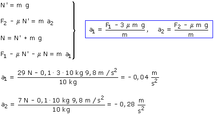

| El bloque 1 tiene fuerza útil hacia la izquierda,
su aceleración irá hacia la izquierda El bloque 2 roza con el bloque 1. El bloque 1 roza con el suelo y con el bloque 2 Sentidos de las fuerzas de rozamiento entre bloques Ecuaciones de la dinámica
Combinando las ecuaciones obtenidas resulta un sistema de incógnitas: N, N', a1, a2  La aceleración negativa del bloque 1 indica que este no se mueve respecto al suelo porque le sujeta el rozamiento. Pero la aceleración negativa del bloque 2 indica que este no se mueve respecto al bloque 1 y hemos empezado suponiendo que los bloques se movían por separado |